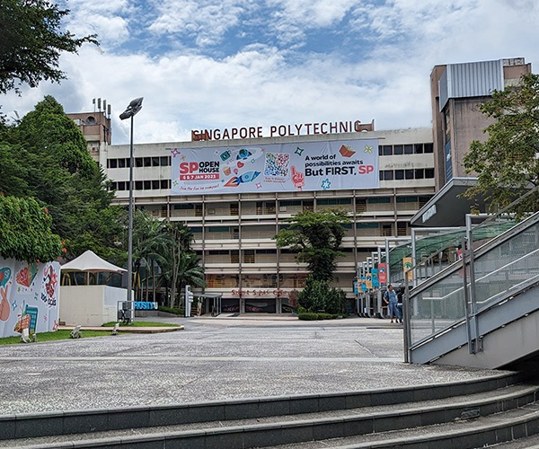
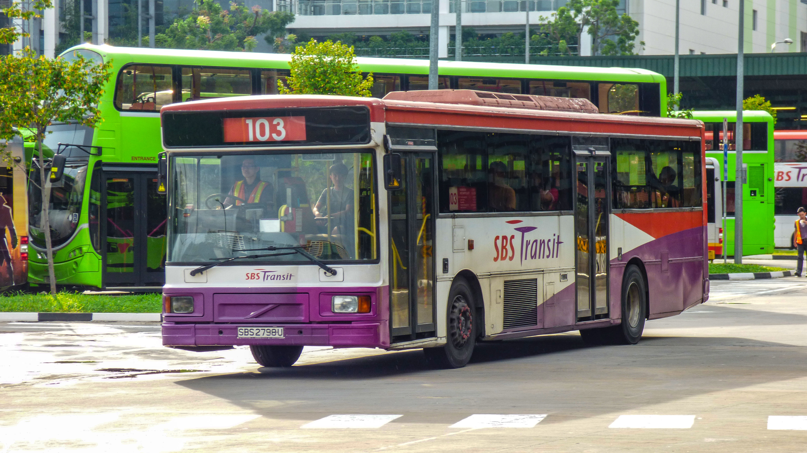
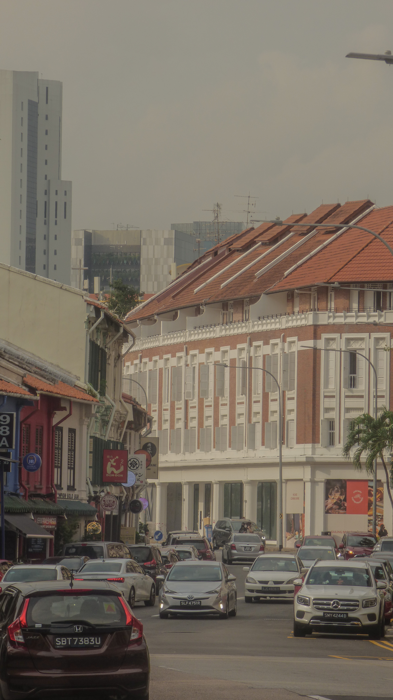
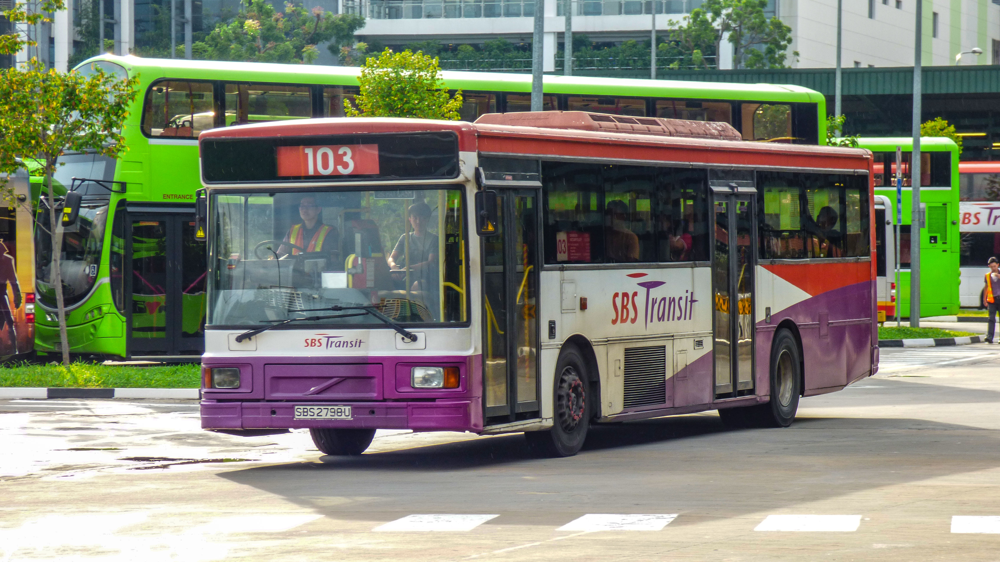
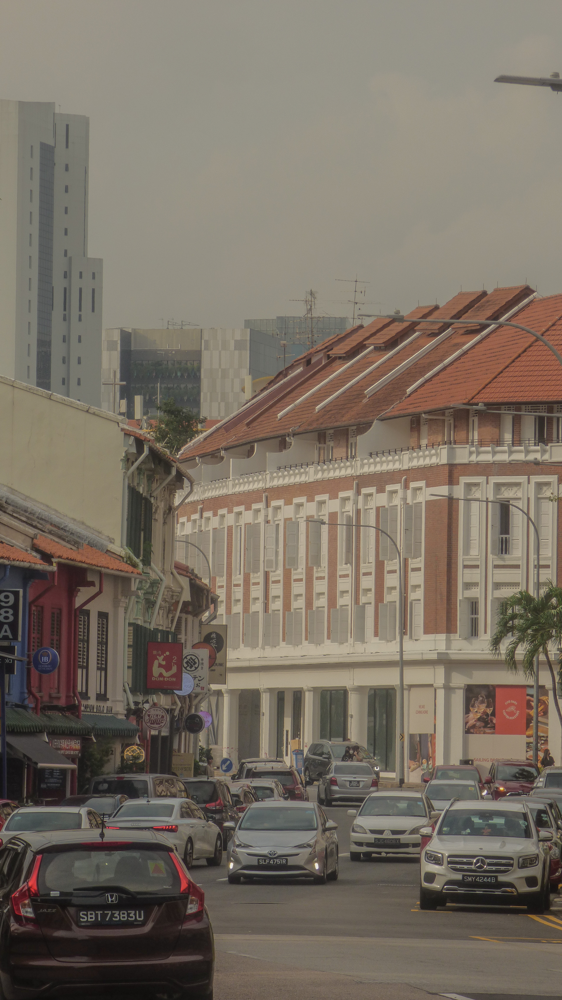

HELLO! I'M ASHER!
Scroll down to find out more about me!
MORE ABOUT ME
My name is Asher, and I'm from the Common ICT Programme, or DCITP for short.
I'm from Canberra Secondary School, and was there from 2018 to 2021. The memories and friends that I made there were unforgettable and I still keep in contact with some of them as of today. Looking back, it was the best 4 years I had spent there.
After graduating from secondary school, I entered Singapore Polytechnic through PFP (Polytechnic Foundation Programme.) It's a one year programme for the top 10% of N(A)-Level students, and I was fortunate enough to be part of that top percentage. Looking back, PFP helped me to explore campus life one year earlier than my year 1 peers. It also helped to adapt to polytechnic life better. I was also given the chance to make friends from other courses.
MY INTERESTS
Some of my interests include photography. I've been doing photography since I was in primary school.
 



Above are my works
You can find more of my pictures here:
I also go to the gym and work out because I want to be fit.
MY PERSONALITY
I'm more of an introverted guy, rather than an extroverted guy. I'm usually not very good in socialising with people and am usually very awkward around new people. However, I'll try my best to be sociable with others and be friendly towards everyone!
MY VALUES
My values include Honesty and Gratefulness.
Being honest is one of my values as being honest helps to make the world a better place. It helps to make the world a better place as if people weren't honest and started lying, the world would end up like a dystopia as people have made empty truths about certain things and people would start to not trust each other. I like to be honest as the feeling is right when I'm telling the truth.
Being grateful is also one of my values. Being grateful adds positivity to my life as it helps to appreciate the present moment and acknowledge the good things that we have. The way I become grateful is by writing down what I'm grateful for everyday in a journal. It helps me stay positive even when life gets hard.